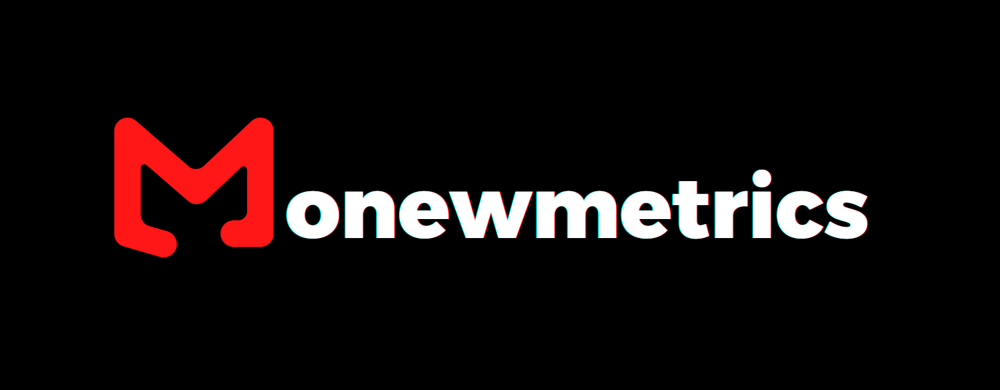

👋 Hello, I’m Mbarak Abubakar
I’m a third-year Business and Finance student at Middlesex University Dubai, with almost three years of experience working in entry-level finance and accounting roles.
While I don’t come from a traditionally quantitative background, I’ve always been curious about how data and numbers can tell deeper stories especially in the world of finance. I began learning on my own using free resources online, and eventually saved up to take a Data Science course, which gave me a solid technical foundation and later further reinforced by analytics coursework in college and university.
Although I enjoy the qualitative and fundamental side of financial markets (evaluating businesses, industries, and narratives), I’ve also developed a real passion for data-driven analysis and statistics & probability, especially when it comes to understanding how markets move and how data can help make sense of it all.
That’s what led me to create Monewmetrics, a space where I can learn, document, and share.
The content here reflects my ongoing learning journey and the topics I’m genuinely curious about and actively working to understand better, often with a view to applying them in real-world scenarios.
This website has 3 areas:
📈Quantitative Research
This is where I explore quantitative methods to analyze financial and economic data using econometric models and machine learning algorithms. I believe that, especially in the short term, data-driven approaches are often the most effective way to understand markets.
“My approach was to ignore the crowd and base my decisions on quantitative evidence.”
— Edward Thorp (Pioneer of Quantitative Finance)
All of my research is conducted in Python, primarily within a Jupyter Notebook environment using the Anaconda distribution. Since the emergence of Generative AI tools like ChatGPT, I’ve increasingly used them to assist with coding, so most of the code in projects posted after 2022 is AI-assisted.
📊 Statistics & Probability
This section is where I explore both foundational and advanced concepts in statistics and probability including topics like measures of central tendency and dispersion, regression assumptions, hypothesis testing, and statistical inference, etc.
It’s part study journal, part reference toolkit a way for me to solidify my understanding and build statistical intuition, especially as I apply these concepts to data-heavy finance projects.
“Understanding how to handle randomness is one of the most important skills you can develop.”
— Nassim Nicholas Taleb
Although I’ve used paid resources like [Practical Statistics for Data Scientists (https://www.oreilly.com/library/view/practical-statistics-for/9781491952955/), I often rely on high-quality, freely available resources as well. Some of my favorites include: Introductory Statistics – OpenStax (Rice University) and 3Blue1Brown’s Visual Lessons
💼 Financial Analysis
This section is a bit different from the other two, it’s more of a meta section , but I’ve included it to keep all my company-specific or broader financial analysis organized and easy to navigate.
Here, I dive into individual companies that I’m personally interested in for long-term investing. Since long-term decisions require a more fundamental rather than purely quantitative approach, this section leans more into traditional financial analysis. I share these insights on my LinkedIn or Seeking Alpha.
I apply equity research best practices, including 3-statement financial modeling, Discounted Cash Flow (DCF) valuations, Qualitative deep-dives into business models, competitive advantages (moats), industry dynamics, and key macro/microeconomic drivers etc.
“Know what you own, and know why you own it.”
— Peter Lynch
While it may not be as code-heavy or technical as the other sections, it’s still a side I enjoy doing and is a core part of how I think about markets and businesses while also grounded in structured analysis and real-world application.
The content on this site is for educational and informational purposes only and does not constitute financial advice. I am not a financial advisor, and nothing here should be taken as investment guidance.
Always do your own research or consult with a qualified professional. I accept no responsibility for any loss (or gain) resulting from the use of this content.